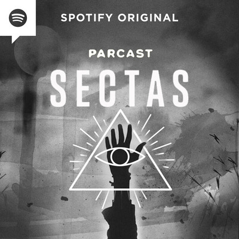

CARLOS CASTANEDA

Los libros de Castañeda afirman que estuvo con Don Juan en
México, estaba en la UCLA. Dicho antropólogo y escritor
aseguraba haberse convertido en un chamán Nagual tolteca tras un
intenso entrenamiento de modificación de la conciencia y su
percepción, que incluía el uso ritual de enteógenos. Sus libros,
que tienen un carácter sincrético ya que sonmezcla de
autobiografía, alucinógenos, rituales toltecas, misticismo y
religión, han tenido un tremendo éxito de ventas, tanto que hoy
en día son traducidos a los más variados idiomas del mundo. Sus
primeros libros están ligados a la psicodelia y la contracultura
de fines de los años 60 y 70. En gran medida porque así él lo
quiso con el propósito de “borrar su historia personal”, no hay
datos uniformes acerca de las fechas y lugares de los hechos de
su vida. Es posible que “borrar su historia personal” sea un
recurso literario, o un mecanismo para defenderse de las
incongruencias en sus afirmaciones, mostradas por De Mille. Según
lo declarado por él mismo, nació el 25 de diciembre de 1935 en
Juqueri, São Paulo, Brasil. Su padre, César Miguel Torres,
habría sido un orfebre-relojero. En 1948, la familia se traslada
a Lima, donde Carlos se gradúa en el Colegio Nacional Nuestra
Señora de Guadalupe. Sostuvo que lo enviaron a un internado en
Buenos Aires, Argentina y más tarde a San Francisco, Estados
Unidos, a la edad de 15 años. Allá viviría con su familia
adoptiva hasta graduarse en la Hollywood High School. En 1951
emigraría a Los Ángeles, California, donde cursaría estudios de
antropología en laUniversidad de California (UCLA) en Los
Ángeles. Entre 1955 y 1959 asiste a varios cursos en el City
College de Los Ángeles: literatura, periodismo y psicología,
actividad esta última en la que se desarrollaría como ayudante,
desgrabando cintas de sesiones terapéuticas. En 1959 se
naturaliza estadounidense y adopta legalmente el apellido
materno Castañedacambiando la "ñ" por “n” por cuestiones
idiomáticas. Ese mismo año ingresa en la Universidad de
California (UCLA) de Los Ángeles, endonde se gradúa en
antropología en 1962. En 1968 publica su primer libro "Las
enseñanzas de Don Juan", con el cual obtiene el “máster” y en
1973 se le concede el doctorado por su tercer libro "Viaje a
Ixtlán". Sus sucesivos libros cuentan sus experiencias con Juan
Matus, un indioyaqui depositario de este antiguo conocimiento
del que Castañeda se hizo supuestamente portavoz, un estrecho
contacto que se extendió al parecer de 1960 hasta 1973.
SECTAS - Carlos Castaneda - "Tensegridad - Parte 1"
En 1960, el estudiante de antropología
Carlos Castaneda siguió a un guía nativo americano yaqui
en el desierto. Ahí recibió una revelación divina sobre la
naturaleza subjetiva de la realidad, una revelación que
Castaneda sólo podía compartir ejerciendo niveles extremos de
control sobre cada estudiante que encontraba.